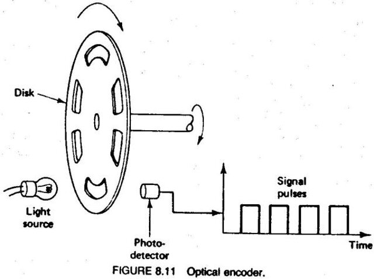
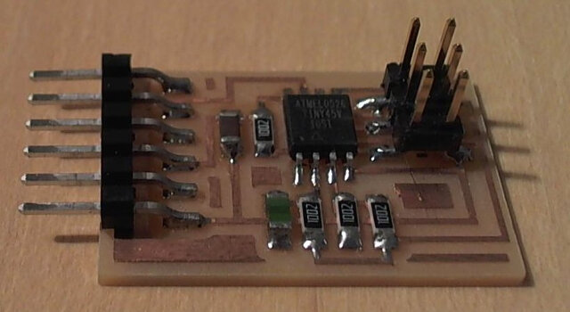
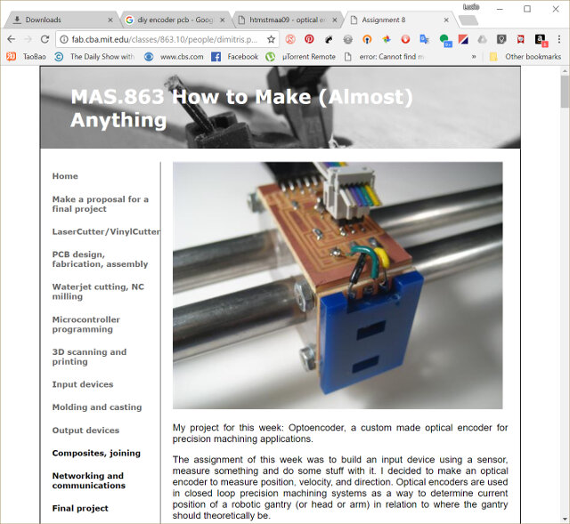
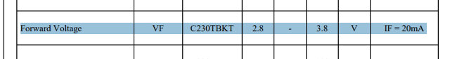
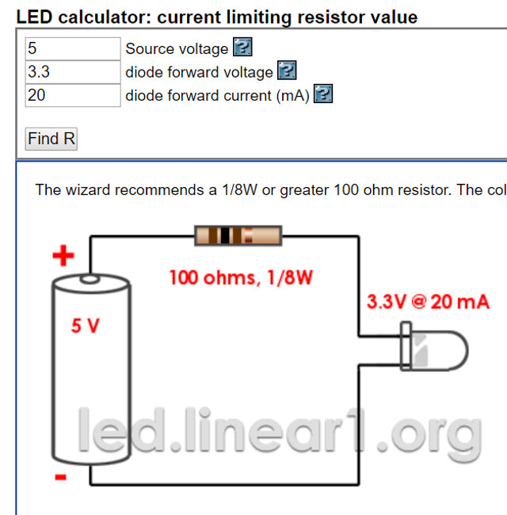
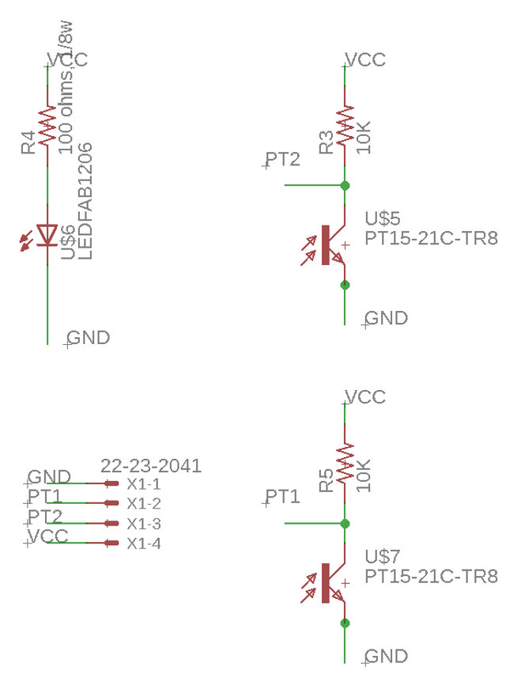
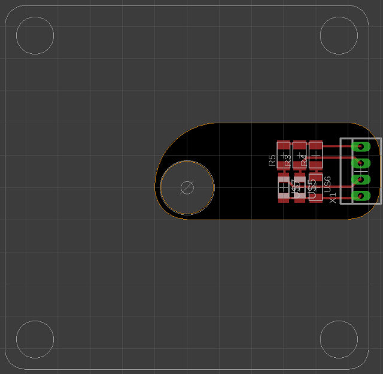
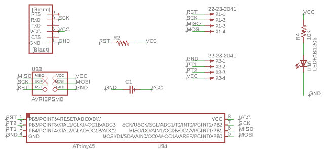
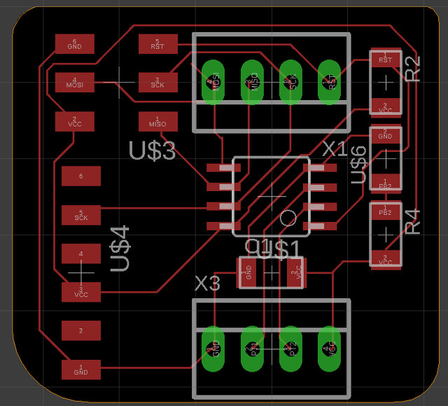

Week 09
Input Devices
Group Project
- Measure the analog levels and digital signals in an input device.
Individual Project
- Measure something: add a sensor to a microcontroller board that you have designed and read it.
Learning outcomes:
- Demonstrate workflows used in circuit board design and fabrication.
- Implement and interpret programming protocols.
Have you:
- Described your design and fabrication process using words/images/screenshots.
- Explained the programming process/es you used and how the microcontroller data sheet helped you.
- Explained problems and how you fixed them.
- Included original design files and code.
Week workflow
Study Neil's input boards → Decide what type of imput → Design Schematic/Boad → Mill the board→ solder components → debug → edit and publish website
Tools used
- Solder Station
- TaoBao CNC
- test equipment: digital voltmeter, oscilloscope, regulated power supply
Software Used
- Eagle
- Fab Modules
- Gimp
Individual Project
As I am making a large CNC for my final project I decided to make an optical encoder. The Optical encoder would assure that the CNC movements are where they should be.

What is an Optical Encoder
The Optical Encoders is an electromechanical device that monitors movement, speed and or direction.
video explaining what is an encoder
video explaining what is an absolute encoder

References
As done on week 7 I started by reviewing Neil's boards. The one I would be redesigning is the visible light input board.
{kind=link}

I checked this website

Designing the PCB
The first step was creating the schematics. I based my schematics on the design of professor Neil's visible light input board and adapted it with consideration of what a previous Professor Neil's Student did on his assignment. The difference is I want to have extra 2 led as light source and also an extra 2x6 header for being able to repurpose this prototype board.
The Datasheets and resistor calculations
In order to calculate the resistor values and other, I examined the following Datahsets and the calculations/observations I made:
- Phototransistor
- Blue LED
- ATTINY45
Neil on his light input devices uses a 10K resistor on the collector side of the phototransistor, as I am using the same phototransistor as him It would be safe to use the same value, but I wanted to understand a bit more of its inner workings so I extracted some parts of its datasheet:


Bellow is how my schematics looks like:




| qty | Location | Digikey or MouserPart number | Manufacture Part # | Description |
|---|---|---|---|---|
| 1 | U1 | ATTINY45V-10SU-ND | ATTINY45V-10SUR | IC MCU 8BIT 4KB FLASH 8SOIC |
| 2 | R1 | 311-10.0KFRCT-ND | RC1206FR-0710KL | RES SMD 10K OHM 1% 1/4W 1206 |
| 1 | R2 | 311-100FRCT-ND | RC1206FR-07100RL | RES SMD 100 OHM 1% 1/4W 1206 |
| 1 | D3 | 160-1169-1-ND | LTST-C150GKT | LED GREEN CLEAR 1206 SMD |
| 1 | C1 | 445-1423-1-ND | C3216X7R1H105K160AB | CAP CER 1UF 50V X7R 1206 |
| 1 | FTDI | 6 pin header | ||
| 1 | RESONATOR | XC1109CT-ND | ECS-CR2-20.00-B-TR | CER RES 20.0000MHZ 15PF SMD |
| 1 | 450-2058-1-ND | FSM6JSMATR | SWITCH TACTILE SPST-NO 0.05A 24V | |
| 1 | ISP | 649-95278-101A06LF | 71600-006LF | Headers & Wire Housings 2X3P UNSHRD HDR 30 microinch gold |
Now I need to design the board around a stepper motor. I will need a hole for the axis and also holes to screw the pcb to the motor. To achieve this I will export a dxf file from solid works with a stteper design that I am using and try to design the pcb around it.
One thing I was worried was how to tell direction and what would be the ideal position for the phototransistors.
http://www.machinedesign.com/sensors/basics-rotary-encoders-overview-and-new-technologies-0